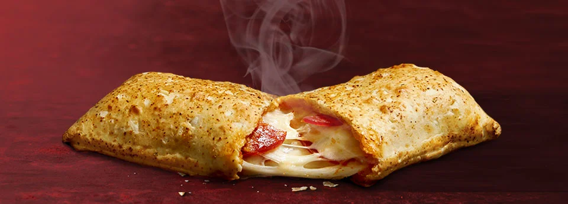

Hot Pockets

Description
Easy, cheesey, and loved by those who don't want to cook all over the world,
Ingredients
Hot Pockets
Microwave
Steps
Remove Hot Pockets from packaging
Place on microwave safe plate
Cook in microwave for 2.5-3 minutes
Enjoy!